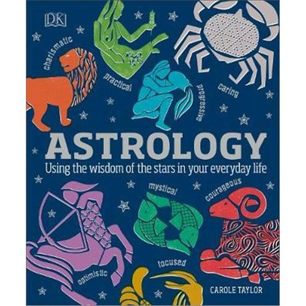

占星术Astrology
Astrology service
占星咨询的主要服务项目,我们经常听到说占星咨询，但是其实对大多数人来说，并不大清楚占星具体能干什么？能为自己的生活带来什么？他们有哪些服务的类型？通常，占星师总是听到人们说"来，给我占一下，算一卦"，好像，占星就是占卜一样。但是我将通过独特的占星专业技术挑战您认为您所知道的东西，推动您超越您的想法，并帮助您从每个机会中获得优势。帮助您做出更好的决策，并将这些决策转化为行动，实现您所希望的可持续成功。
如果不确定问题，可以先添加文末占星师微信，进行预约，此方式不限任何问题，为直接交流的模式，但是客户需要考虑提出新问题时，视问题难度，占星师实时需要制作星盘的合理时间，如果需求明确，也可以按照下面的表格分项。
主要告诉你，什么时候事业会有转机，什么时候财运会好，什么时候结婚，什么时候会有子女运等等，流年盘重点在于“何时会发生的事件”。按照事件内容和时间段（年、月）为计费单位，年运的起止点是从生日到生日。职业，财运，婚姻，健康，子女等。一个单独周期内的情况，须先选定时间范围，一年或者一个月。用于问具体事件，三个月内有结果的，利用卜卦的方法，一事一卦，如是否会有复合的机会，是否能够拿到事业的合作或者签约机会，是否可以出国，是否可以办理某个手续顺利完成等等。
